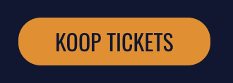
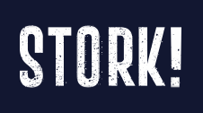
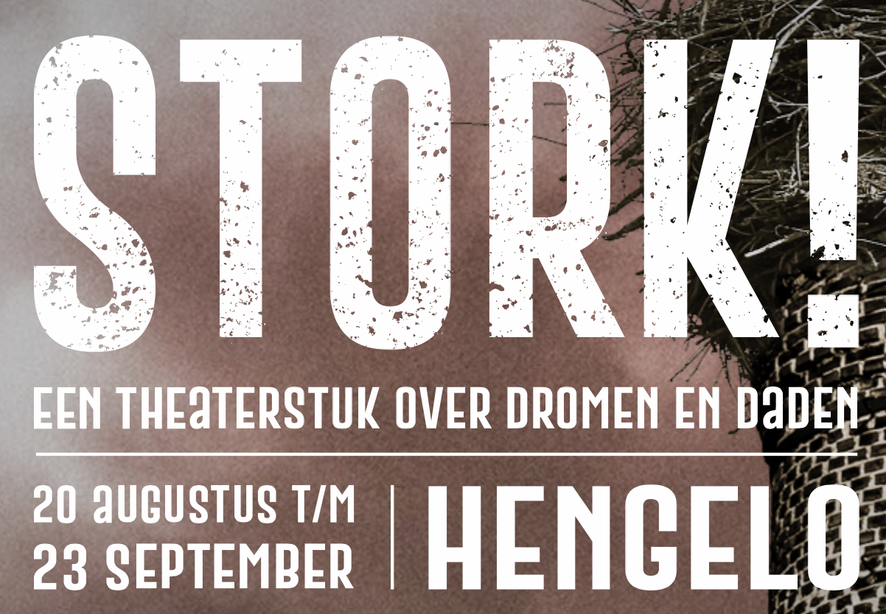
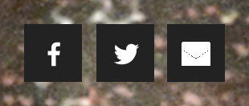
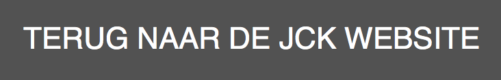
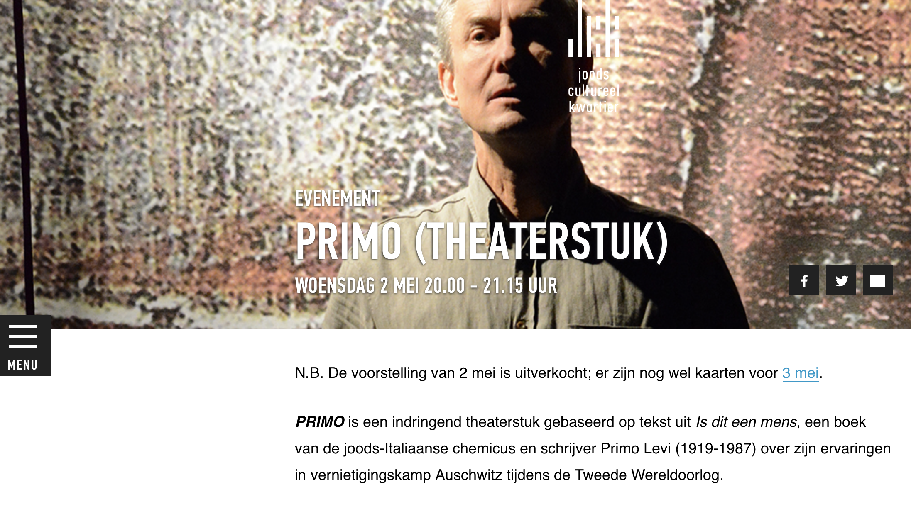
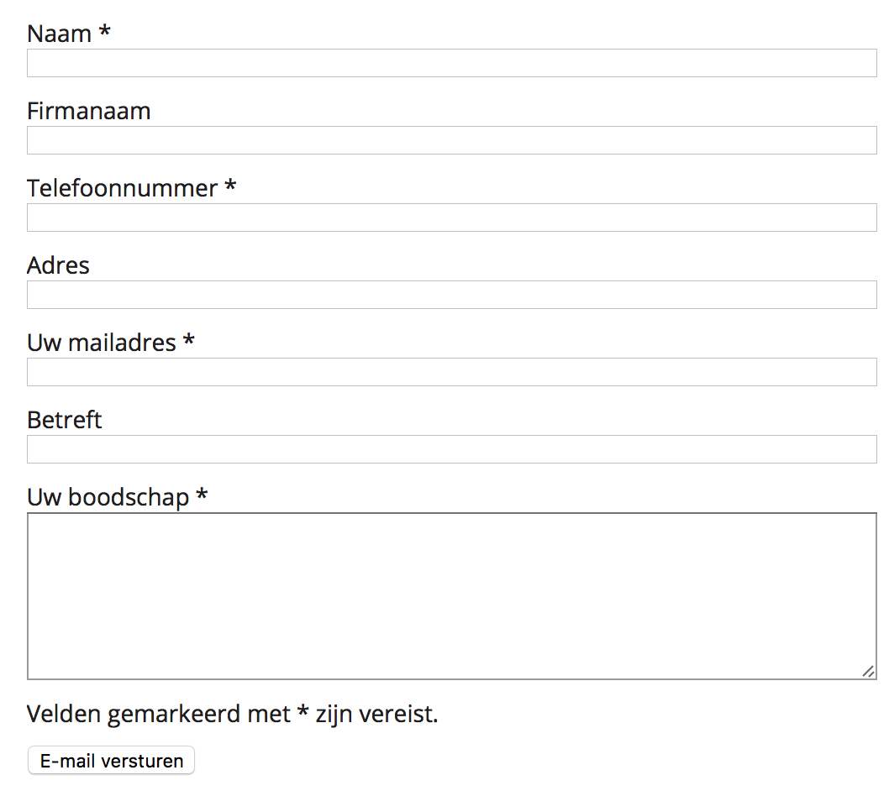
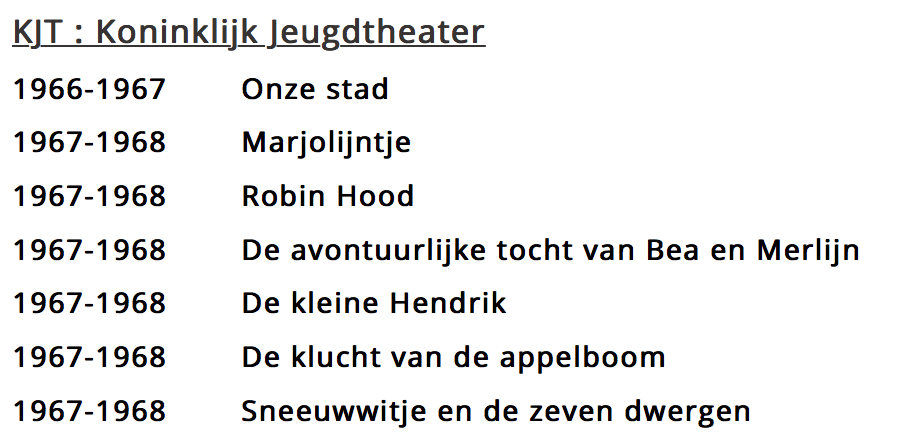

Concurrentie analyse
Stork 150 jaar
Positieve punten
Duidelijke knop om tickets te kopen:

Een logo dat je terug naar de Homepagina leidt:

Op de homepagina staat duidelijk waarover het theaterstuk gaat en wanneer het plaatsvindt:

Joods cultureel kwartier: Primo theaterstuk
Positieve punten
Duidelijke links naar hun sociale media pagina's:

Wanneer je klikt op 'tickets' ga je door naar een ander tabblad. Daarom is het handig dat ze een knop maken waarmee je terug naar de website van JCK kunt gaan:

Negatieve punten
De menu zit hier aan de zijkant. Dit is voor de bezoeker soms niet meteen duidelijk.

Nonkel Jef en de verloren zoon
Positieve punten
Een contactformulier die de gebruiker kan invullen als hij/zij vragen heeft.

Negatieve punten
Is die opsomming van alle voorstellingen door de jaren heen wel nodig?
Het is eerder nodig om je te informeren rond de voorstelling ‘nonkel Jef'.
Het chronologische rangschikken is niet zo interessant, ik vind het aangenamer als ik eerst het meest recente lees (zie STORK).
Het zou beter zijn als de data zou aflopen.
